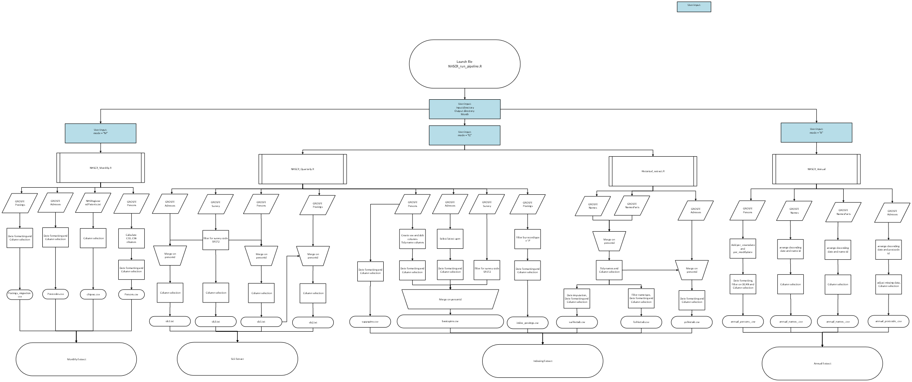

Assessing the NHSCR pipeline against the RAP Assessment Tool
An organisational KPI is to
“Increase the proportion of statistical processes that are automated, transparent and reproducible using open-source coding and RAP principles.”
To measure this, the RAP Development Team have come up with the RAP Assessment Tool, where all the statistical processes that NRS teams produce can be measured as to whether they meet RAP good practice or not.
This guidance aims to provide further guidance to the guidance provided in the RAP Assessment Tool, by using the NHSCR RAP pipeline as an example of all of the criteria.
The NHSCR code can be found here.
Does a process map exist?
Process maps provide a clear, visual overview of how data flows from inputs through processing and analysis to final outputs.
The NRS RAP Book contains detailed instructions on how to make process maps.
The NHSCR process map is as follows:

Is all code well-commented?
Code comments should be used to provide context to your code. Commenting your code will help others understand the code you’ve written and why it’s been written in a particular way.
A commented line of R code starts with a single # followed by a space.
# Test that only nametypes of zero are recorded
assert_that(unique(surhisttab$nametype) == "0")This example comment from the NHSCR RAP pipeline explains to the reader who may not be familiar with that code syntax, what the purpose of the code does in plain English.
Is your code in a self-contained and well-structured repository?
A repository is another word for the folder where all the files for your project are stored. A self-contained repository means all files required for the project are stored in the same place.
Your repository should have a sensible, organised, clear structure. Sub-folders may be created for code, data, lookups, data, outputs, functions (pick and choose which are relevant to your project).
Code scripts should be numbered if they should be run in a certain order. Data and output files should be date-stamped.
It should be clear to somebody new to the project where to look for certain files.
The NHSCR repository structure is as follows:
|-- README.md
|-- R_NHSCR.Rproj
|-- NHSCR_run_pipeline.R
|-- .gitignore
|-- code/
| -- Historical_extract.R
| -- NHSCR_Annual.R
| -- NHSCR_Monthly.R
| -- NHSCR_Quarterly.R
|-- functions/
| -- Compare_outputs_functions.R
| -- Dateformatting_functions.R
| -- Make_comparisons.R
| -- Read_in_data.R
| -- Test_functions.R
| -- Validation_test_helpers.R
|-- lookup/
| -- Basic_spine_colnames.R
| -- input_colnames.R
| -- migration_colnames.R
| -- SLS_colnames.R
| -- Yearly_colnames.R
|-- output_metadata/
| -- metadata.Rmd
|-- validation/
| -- Compare_outputs.R
| -- Validation_tests.RDoes your code repository contain a README file?
A README file should be stored within your repository and contain a brief overview of the project including instructions for running the code and contact details for the team who owns the project.
The README can be in any text file format, however it is recommended to use a markdown file format (.md) as this will be automatically displayed in your repository.
An Example README FILE
Are dependencies documented?
To ensure reproducibility of your code it is important that package dependencies are documented in your RAP project code repository. Record names and the version of each external R or Python package used.
In the NHSCR code packages and their versions used are documented in the README file.
## Other Attached Packages
| Package | Version |
|------------|---------|
| renv | 1.2.3 |
| rmarkdown | 2.25 |
| data.table | 1.18.4 |
| here | 1.0.2 |
| glue | 1.6.2 |
| assertthat | 0.2.1 |
| lubridate | 1.9.3 |
| forcats | 1.0.0 |
| stringr | 1.6.0 |
| dplyr | 1.2.1 |
| purrr | 1.2.2 |
| readr | 2.1.4 |
| tidyr | 1.3.1 |
| tibble | 3.2.1 |
| ggplot2 | 3.5.0 |
| tidyverse | 2.0.0 |
| knitr | 1.45 |
| callr | 3.7.6 |
| janitor | 2.2.1 |Does your code follow a style guide?
A style guide describes best practices for writing clean, consistent and maintainable code. For example:
Naming conventions for variables, functions, files.
Formatting rules to make your code easier to read.
Standard ways document and comment code.
Best practices for writing efficient code, reducing errors.
For R, we recommend following the tidyverse style guide.
Does your code use configurable parameters?
A data analysis process is more secure and reusable if certain values are stored separately from the analysis code. For example:
Directory paths for reading or writing files such as csv files or spreadsheets
Database connection details
A URL and API key required to access an external API to read data
Parameter values to be set before running the code, for example a reference year
Writing such values directly into code is known as hard-coding and it is best avoided where possible. It is better practice to manage these type of variables as configurable parameters.
For sensitive variables such as API keys consider using the keyring package for R or Python to store these securely. An alternative is to create an environment variable.
For less sensitive parameters a config file or script can be used to set values such as file paths or analytical variables used throughout a process.
More information is available in the Configuration chapter of the Duck Book.
# Input the full path to input files location. Must be in ""
in_dirpath <- "/mnt/dl_acp79_read/Archive/Downloads/Downloads \2026/Download - Mar 26"
# Input the desired path to the out folder location.
# It is good practice that this is a separate folder to the input files to
# avoid accidental overwriting. Must be in ""
out_dir <- "/mnt/dl_acp79_modify/SAS to R - Testing/Testing_R_code/"
# Input the migration month. This is for naming output files. It should follow
# the convention MonthYear i.e "Jan26"
mig_month <- "Mar26"
# Input determines wither to run Monthly or Quarterly extracts
# Set as "Monthly" or "M" to run just the monthly extract
# Set as "Quarterly" or "Q" to create both monthly and quarterly extracts
# Set as "Annual" or "A" to create the complete extract
mode <- "M"This example from the NHSCR RAP pipeline sets the configurable parameters all in one place in the NHSCR_run_pipeline.R code, and explains clearly to the reader how to set the parameters.
Is code used for all data processing steps?
Data processing includes steps to extract data from its storage location, cleaning, restructuring and linking with other data sources.
Using code for these steps can help to document all changes that are made to a dataset and minimise the risk of human error when carrying out these steps manually.
The R for Data Science book has guidance on using code for importing data, data transformation and tidying, including recommendations of which R packages to use.
The NHSCR RAP pipeline uses code for all data processing steps and the script NHSCR_run_pipeline.R to run whichever of the four extracts are required.
#run the selected mode
if (mode == "monthly" || mode == "m") {
print("Running Monthly pipeline")
source("code/NHSCR_Monthly.R")
print("Monthly extracts completed")
} else if (mode == "quarterly" || mode == "q") {
print("Running Monthly pipeline")
source("code/NHSCR_Monthly.R")
print("Monthly extracts completed")
print("Running quarterly pipeline")
source("code/NHSCR_Quarterly.R")
source("code/Historical_extract.R")
print("Quarterly extracts completed")
} else if (mode == "annual" || mode == "a"){
print("Running Monthly pipeline")
source("code/NHSCR_Monthly.R")
print("Monthly extracts completed")
print("Running quarterly pipeline")
source("code/NHSCR_Quarterly.R")
source("code/Historical_extract.R")
print("Quarterly extracts completed")
source("code/SCR_Annual.R")
print("Annual extracts completed")
} else {
print("No mode has been selected")
}Are all data inputs clearly documented and version controlled where possible?
All datasets, lookups and reference files used within the process should be clearly documented, including their source and purpose. Where possible, changes to these inputs should be tracked through version control to improve transparency, reproducibility and auditability.
In the NHSCR RAP pipeline, this information is all contained in the README.md and version control is used to track changes.
Are analytical outputs generated automatically from the source data and code?
Open source programming languages such as R allow all components of a published output to be created with code. This includes all charts, tables and commentary. R Markdown or Quarto might be used for html reports or Shiny for dashboards. Some benefits of this approach:
It reduces error in copying and pasting items into a document.
It saves time regenerating the report for updated source data as the process has been automated.
It can ensure accessible, well formatted and professional looking outputs.
For the NHSCR RAP pipeline, code has been used to produce all output tables and markdown has been used to produce the README.
Is Git used for version control?
Git is a version control software for tracking changes to files. Using Git means you don’t need to save multiple copies of the same file to retain older versions. Git keeps a record of what change was made, when the change was made, why the change was made, and who made the change.
The NRS RAP Book contains further guidance on using Git in R.
Does code contain functions where appropriate?
Replacing repetitive blocks of code with functions can make your code easier to read and make it easier for you or others to maintain and update the code in future. This process is often known as code refactoring.
For example, in the NHSCR code, we created a custom function for date columns which converts NA (i.e. missing) to blank:
# general date formatting for columns which converts NA - blank
fmt_date <- function(x) {
ifelse(is.na(x), "",
format(x, "%Y%m%d"))
}Is data quality assurance built into the code?
Code can be used to automate data quality assurance. Checking assumptions about data early in your analysis pipeline ensures that any issues can be spotted and dealt with quickly.
The NHSCR pipeline contains
Is automated testing built into the code?
Automated checks can be used throughout the analytical pipeline to verify data quality, calculations and outputs. Building validation and testing into the code helps identify issues earlier, reduces manual quality assurance effort, and improves reproducibility.
The NHSCR testing scripts are contained in the “validation” folder.
Can the process be executed end-to-end with minimal manual intervention?
The ultimate aim is for all steps in an analytical pipeline to be executed from a single script. This negates the need to open individual code scripts and run them one-by-one in a certain order.
The NHSCR pipeline can be run dynamically from changing the configurable parameters in the script NHSCR_run_pipeline.R.
Has code been reviewed by somebody inside the immediate team?
Having your code reviewed by somebody else in your team can assure you that:
your code works as expected
your analysis is reproducible
your documentation provides sufficient information for somebody else to know how to run your code
Code review can be a one-off exercise but ideally somebody else should review your code any time a change is made. If you are already using GitHub or Azure DevOps, this can be facilitated by using Pull Requests.
Has your code been reviewed by somebody outside the immediate team?
It is beneficial for someone external to the team to review the RAP code:
It ensures reproducibility of the RAP as a standalone process, not relying on undocumented internal knowledge.
People more distant from the process can provide useful feedback and perspective.
Contact the RAP team for code reviews - rap.development@nrscotland.gov.uk